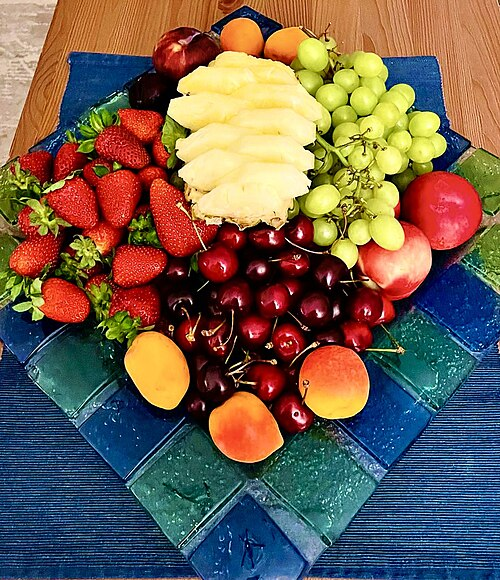

Fruits are the means by which angiosperms disseminate their seeds. Edible fruits in particular have long propagated using the movements of humans and other animals in a symbiotic relationship that is the means for seed dispersal for the one group and nutrition for the other; humans, and many other animals, have become dependent on fruits as a source of food. Consequently, fruits account for a substantial fraction of the world's agricultural output, and some (such as the apple and the pomegranate) have acquired extensive cultural and symbolic meanings. In common language and culinary usage, fruit normally means the seed-associated fleshy structures (or produce) of plants that are typically sweet (or sour) and edible in the raw state, such as apples, bananas, grapes, lemons, oranges, and strawberries. In botanical usage, the term fruit includes many structures that are not commonly called as such in everyday language, such as nuts, bean pods, corn kernels, tomatoes, and wheat grains.